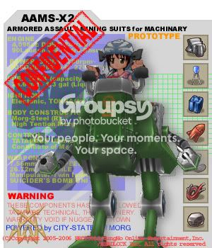
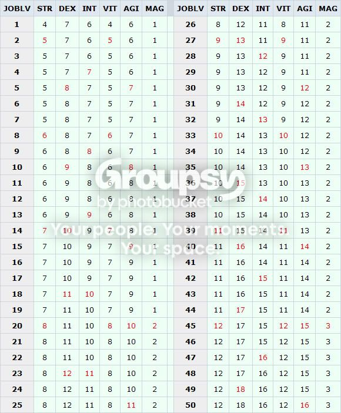

"Welcome To -‘๑’- New Machinery Guide -‘๑’- Welcome to the future "
Senzt เขียน:ฝากดูกระทู้ด้วยนะครับ จะไปเวิกแอนทราเวลแล้ว

จากข้อความที่ทิ้งไว้ของสมาชิกคนสำคัญของพวกเรา (กระทู้หน้า Machinery ของคุณ Senzt หน้า 216) และประกอบกับมีผู้เล่นหน้าใหม่ที่สนใจในอาชีพ Machinery จำนวนมาก
กระทู้นี้เลยก่อตั้งขึ้นมาเพื่อ Machinery มือใหม่ ที่ต้องการจะศึกษาหา Guide สำหรับการเล่นอาชีพ Machinery อย่างแท้จริง
จุดประสงค์ของกระทู้นี้
- เพื่อจัดทำ เรียบเรียงข้อมูลสำหรับ อาชีพ Machinery โดยเฉพาะ แทน คุณ senzt สมาชิกรุ่นบุกเบิกเคยสร้าง Guide Machinery ไว้ก่อนหน้านี้
- เพื่อเป็น Guide แนวทางสำหรับผู้เล่นใหม่และผู้เล่นเดิม
- เพื่อเป็นแหล่งแลกเปลี่ยนข้อมูลต่างๆเกี่ยวกับอาชีพ Machinery โดยเฉพาะ

kururu เขียน:ก่อนอื่นต้องขอบอกก่อนว่า การจะเล่น Machinery ให้เก่งได้ต้อง อาศัยความอดทนและความสามารถในการเก็บเลเวลของตัวเอง โดยไม่ไปขอดูดปาร์ตี้เกาะกิน เพื่อที่จะเป็นการหาทุนไว้ด้วยสำหรับอาชีพ Machinery ด้วย เพราะเป็นอาชีพที่ใช้ทุนอย่าง(มากมาย)
ข้อแนะนำอีกอย่างคือ ควรเล่น Job BS 50 ก่อนเพื่อเอาสกิลมาช่วยให้เก็บเลเวลเองง่ายขึ้น
-‘๑’- Machinery Skill -‘๑’-

Active
skill : Machine Create
Lv.Job : Lv.2
Lv.Max : Lv.3
Effect : สามารถประกอบเครื่องจักรได้ เมื่อเรียนแล้ว ประสิทธิภาพของ Machine Repair Kit จะสูงขึ้น
skill level 1/2/3
SP ที่ใช้ 3/5/7
Comment : เหมาะสำหรับ ผู้เล่นสายผลิตของ

Active
skill : Machine Kit
Lv.Job : Lv.3
Lv.Max : Lv.5
Effect : ผลิตชุดเครื่องมือ ที่สามารถซ่อมเครื่องจักรได้
skill level 1/2/3/4/5
ระดับของ kit 1~8/ 2~11/ 3~14/ 4~17/ 5~20
SP ที่ใช้ 15
Comment : เหมาะสำหรับ ผู้เล่นสายผลิตของ

Passive
skill : Machine Knowledge
Lv.Job : 4
Lv.Max : 1
Effect : สามารถหาไอเทมจากเครื่องจักร ได้อย่างดีเยี่ยม
Comment : สกิลนี้ MAchinery ทุกคนควรอัพไว้น้า

Passive
skill : Pilot Mastery
Lv.Job : 5
Lv.Max : 1
Effect : Passive Skill ทำให้สามารถขึ้นไปขับ Robota ได้
Comment : ต้องอัพไว้อยู่แล้ว จริงไหม
Passive
skill : Robot Recover Up
Lv.Job : 7
Lv.Max : 5
Effect : Passive Skill เพิ่มพลังการฟื้นฟูของ Pet พาหนะ ประเภท Robot
skill level 1/2/3/4/5
อัตราการฟื้นฟู +10% /+14% /+18% /+22% /+26%
Comment : เก็บ point ไว้อัพสกิลอื่นดีกว่าน้า
Passive
skill : Robot HP Up
Lv.Job : 8
Lv.Max : 5
Effect : Passive Skill เพิ่ม HP ของ Pet พาหนะ ประเภท Robot
skill level 1/2/3/4/5
HP ที่เพิ่มขึ้น +10% /+13% /+16% /+19% /+22%
Comment : น่าจะอัพไว้โอกาสตกจากหุ่นจะได้น้อยลงงิ

Active
skill : Anti Monster Missile
Lv.Job : Lv.10
Lv.Max : Lv.5
Effect : โจมตีใส่เป้าหมายเดี่ยว ด้วย Missile เมื่อขี่ Pet พาหนะประเภท Robot จำเป็นต้องใช้ไอเทม [Missile] การโจมตี คิดค่า Matk ของหุ่น
skill level 1/2/3/4/5
ระดับความรุนแรง 130%/ 160%/ 190%/ 220%/ 250%
SP ที่ใช้ 4/5/6/7/8
Comment : เก็บไว้เป็นทางเลือกหนึ่งจ้า
Passive
skill : Robot Hit Up
Lv.Job : 12
Lv.Max : 5
Effect : Passive Skill เพิ่มความแม่นยำของ Pet พาหนะ ประเภท Robot
skill level 1/2/3/4/5
ความแม่นยำเพิ่มขึ้น +10% /+14% /+18% /+22% /+26%
Comment : เก็บ point ไว้อัพสกิลอื่นดีกว่าน้า
Passive
skill : Robot Defense Up
Lv.Job : 14
Lv.Max : 5
Effect : Passive Skill เพิ่มพลังป้องกันของ Pet พาหนะ ประเภท Robot
skill level 1/2/3/4/5
ระดับการป้องกันที่เพิ่มขึ้น +10%/ +13%/ +16%/ +19%/ +22%
Comment : เก็บไว้เป็นทางเลือกก็ได้จ้า

Active
skill : Chaff
Lv.Job : Lv.16
Lv.Max : Lv.3
Effect : เมื่อขี่ Pet พาหนะประเภท Robot จะลดความแม่นยำของเป้าหมาย ที่อยู่ในขอบเขต
skill level 1/2/3
ระดับความแม่นยำของศัตรูที่ถูกลด n/a
SP ที่ใช้ 25/30/35
ระยะเวลาผลของสกิล(วินาที) 10/15/20
Delay skill (ตอนร่าย) 1s
Delay skill 1.0 /2.0 /3.0
Comment : เก็บ point ไว้อัพสกิลอื่นดีกว่าน้า
Passive
skill : Robot Avoid Up
Lv.Job : 18
Lv.Max : 5
Effect : Passive Skill เพิ่มพลังการหลบหลีกของ Pet พาหนะ ประเภท Robot
skill level 1/2/3/4/5
อัตราการหลบหลีกเพิ่มขึ้น 10% /14% /18% /22% /26%
Comment : เก็บ point ไว้อัพสกิลอื่นดีกว่าน้า
Passive
skill : Robot Attack Up
Lv.Job : 20
Lv.Max : 5
Effect : Passive Skill เพิ่มพลังโจมตีของ Pet พาหนะ ประเภท Robot ทั้ง Atk / Matk
skill level 1/2/3/4/5
ระดับพลังโจมตีที่เพิ่มขึ้น +10% +12% +14% +16% +18%
Comment : สมควรอัพอย่างยิ่งเลยจ้า

Active
skill : Robot Bombing
Lv.Job : Lv.22
Lv.Max : Lv.5
Effect : Pet พาหนะประเภท Robot จะระเบิดตัวเอง เป็นวงกว้าง โดยจะลดระดับความสนิทสนมลง 1
skill level 1/2/3/4/5
ระดับความรุนแรง n/a
SP ที่ใช้ 20 /23 /26 /29 /32
Delay skill (ตอนร่าย) 0.5s
Delay skill 4.0 /4.5 /5.0 /5.5 /6.0
Comment : ความรุนแรงจะ Random แต่โอกาสที่จะสร้างความเสียหายในระดับสูงมีน้อยมากๆ เก็บ Point ไว้อัพสกิลอื่นดีกว่าจ้า

Active
skill : Veil Out
Lv.Job : Lv.24
Lv.Max : Lv.5
Effect : เมื่อขี่ Pet พาหนะประเภท Robot จะสามารถเคลื่อนที่ในพริบตาได้ ภายในขอบเขตที่กำหนด
skill level 1/2/3/4/5
SP ที่ใช้ 10 /12 /14 /16 /18
Delay skill (ตอนร่าย) 1.5s
Delay skill 0
ระยะ 6 /7 /7 /8 /8
เก็บไว้เป็นทางเลือกหนึ่งจ้า

Active
skill : Over Run
Lv.Job : Lv.27
Lv.Max : Lv.3
Effect : ทำให้ Pet พาหนะประเภท Robot อยู่ในสภาพ Berserk โดยรวม Atk ของผู้ขับหุ่น กับ Atk หุ่น ขณะใช้สกิลจะไม่สามารถบังคับหุ่นให้เคลื่อนไหวได้ จึงจำเป็นต้องมีสกิล Veil Out คอยช่วย ถึงแม้ไม่สามารถบังคับทิศทางหุ่นได้ แต่ยังสามารถกดใช้สกิลได้อยู่
skill level 1/2/3
SP ที่ใช้ 16 /24 /32
รยะเวลาผลของสกิล 10 /30 /60
Delay skill (ตอนร่าย) 1.5 /3.0 /4.5 (s)
Comment : Skill นี้ไม่เหมาะกับสาย NvN สายอื่น ควรจะอัพไว้จ้า

Active
skill : Japanese Style Shooting Missile
Lv.Job : Lv.30
Lv.Max : Lv.5
Effect : โจมตีกระจายใส่เป้าหมายด้วย Missile เมื่อขี่ Pet พาหนะประเภท Robot จำเป็นต้องใช้ไอเทม [Missile] สามารถตรวจจับ เป้าหมายที่ซ่อนตัวอยู่ได้ การโจมตี คิดค่า Matk ของหุ่น skill นี้เมื่อ lock เป้าหมายแล้ว เป้าหมายจะไม่สามารถ หนีได้ แม้จะใส่ papa boots ก็ตาม
skill level 1/2/3/4/5
SP ที่ใช้ 7 /9 /11 /13 /15
ระดับพลังโจมตี 36%*6 /44%*6 /52%*7 /60%*7 /68%*8
Delay skill (ตอนร่าย) 2s
Delay skill 2.0 /2.5 /3.0 /3.5 /4.0
ระยะ Lv1-2 11*11 / Lv3-5 13*13 ช่องรอบตัว
Comment : Skill โจมตีที่ดีสกิลหนึ่ง ควรอัพไว้จ้า

Active
skill : Chill Laser
Lv.Job : Lv.30
Lv.Max : Lv.5
Effect : เมื่อขี่ Pet พาหนะประเภท Robot จะสามารถโจมตีด้วยเลเซอร์ ที่ทำให้เป้าหมายถูกแช่แข็งได้ พลังโจมตีคิดจาก Matk ของหุ่น
skill level 1/2/3/4/5
mp ที่ใช้ 10 /14 /18 /22 /26
ระดับพลังโจมตี 115% 135% 155% 175% 195%
ระยะเวลาผลของสกิล(ถูกแช่งแข็ง) 0.5 /1.0 /1.5 /2.0 /2.5 (s)
Delay skill (ตอนร่าย) 0.5 /0.6 /0.7 /0.8 /0.9 (s)
Comment : เก็บไว้เป็นทางเลือกน้า
Passive
skill : Maintenance
Lv.Job : 31
Lv.Max : 3
Effect : เพิ่มอัตราการฟื้นฟู HP ตามธรรมชาติ ของ Robot ในขณะที่ ขี่ Pet พาหนะ
ประเภท Robot ผลของสกิลจะเกิดขึ้นต่อเมื่อ หุ่นนั่งอยู่กับที่เท่านั้น
Comment : เก็บ Point ไว้อัพสกิลอื่นดีกว่าจ้า

Active
skill : ECM
Lv.Job : Lv.35
Lv.Max : Lv.5
Effect : เมื่อขี่ Pet พาหนะประเภท Robot จะสามารถส่งคลื่นออกไปรอบตัว เป้าหมายมีโอกาสติด Confuse ได้
skill level 1/2/3/4/5
sp ที่ใช้ 16 22 28 34 40
โอกาสติดสถานะConfuse 40% /50% /60% /70% /80%
Comment : เป็นสกิลที่สร้างความปั่นป่วนได้ใน nvn สาย nvn น่าจะลองอัพดูนะ ส่วนสายอื่นข้ามไปเลยจ้า

Active
skill : Fire Radiation
Lv.Job : Lv.40
Lv.Max : Lv.5
Effect : ให้ Pet พาหนะประเภท Robot โจมตีด้วยรังสีอัคคีสามารถใช้ได้เมื่อขับขี่ Pet พาหนะประเภท Robot อยู่ เป็นการโจมตี Atk คิดค่า Atk ของหุ่น สามารถใช้ร่วมกับสกิล Over run ได้
■■■■■
□■■■□
□□☆□□
(หมายเหตุ ☆ แทนตัวผู้เล่น ■ แทนช่องผลของสกิล)
skill level 1/2/3/4/5
sp ที่ใช้ 16 22 28 34 40
ระดับพลังโจมตี 205% /225% /245% /265% /285%
Comment : เก็บไว้เป็นทางเลือกหนึ่งจ้า

Active
skill : Over Tune
Lv.Job : Lv.42
Lv.Max : Lv.
Effect : เพิ่มประสิทธิภาพทุกด้านของ Pet พาหนะประเภท Robot สามารถใช้ได้เมื่อขับขี่ Pet พาหนะประเภท Robot อยู่
skill level 1/2/3/
sp ที่ใช้ 20 /25 /30
ระดับพลังโจมตีที่ถูกเพิ่มขึ้น (Atk/Matk ) 15 /25 /35
ระยะเวลาผลของสกิล 50 /70 /90
Delay skill 60s
Comment : Skill ดีๆแบบนี้ไม่อัพไม่ได้ จริงไหมเอ่ย

Active
skill : Spark Ball
Lv.Job : Lv.44
Lv.Max : Lv.5
Effect : ให้ Pet พาหนะประเภท Robot ยิงบอลไฟฟ้า(*4)ออกไปมีโอกาสช็อตและติด Stun (โอกาสติด 100%) สามารถใช้ได้เมื่อขับขี่ Pet พาหนะประเภท Robot อยู่ พลังโจมตีคิด ค่า Atk สามารถใช้ร่วมกับสกิล Over run ได้ ,เมื่อ skill นี้ lock เป้าหมายแล้ว เป้าหมายจะไม่สามารถหนีได้แม้จะมี papa boots ก็ตาม
skill level 1/2/3/4/5
mp ที่ใช้ 19 /23 /27 /31 /35
ระดับพลังโจมตี 75%*4 /85%*4 /95%*4 /105%*4 /115%*4
Comment : Skill ที่สร้างความเสียหายระดับสูงพร้อมแสดงผล Stun ในระยะเวลาหนึ่ง ควรอัพไว้ทุกกรณี อิอิ

Active
skill : Lovage Cannon
Lv.Job : Lv.50
Lv.Max : Lv.5
Effect : ให้ Pet พาหนะประเภท Robot ยิง Laser ขนาดใหญ่ออกไปเป็นเส้นตรงสามารถใช้ได้เมื่อขับขี่ Pet พาหนะประเภท Robot อยู่
เป็นการโจมตี Atk คิดค่า Atk ของหุ่น สามารถใช้ร่วมกับสกิล Over run ได้ สามารถใช้กับที่ต่างระดับในระยะผลของสกิลได้ สามารถยิงทะลุกำแพงในระยะผลของสกิลได้ ความแรงของพลังโจมตี ขึ้นอยู่กับระยะของการโจมตีด้วย ถ้าศัตรูอยุ่ห่างออกไป พลังโจมตีก็จะลดระดับลง ตามลำดับ
□□■■■□□
□□■■■□□
□□■■■□□
□□■■■□□
□□■■■□□
□□□☆□□□
(หมายเหตุ ☆ แทนตัวผู้เล่น ■ แทนช่องผลของสกิล)
skill level 1/2/3/4/5
MP ที่ให้ 12 /15 /20 /24 /30
sp ที่ใช้ 12 /15 /20 /24 /30
ระดับพลังโจมตี 145%*3 /170%*3 /195%*4 /220%*4 /245%*5
delay skill(ตอนร่าย) (agi 108) Lv5 1.0+0.5*4
delay skill 1 s
Comment : สุดยอดสกิล พลังโจมตีรุนแรงที่สุดของ Machinery แถม skill เท่ห์มากๆ อดทนเก้บเลเวลมาถึง skill นี้ ไม่อัพได้ยังไง จริงไหม ฮุฮุ
สุดท้ายนี้แล้ว Comment ที่เขียนไว้เป็นเพียงความคิดเห็นส่วนตัวเท่านั้น โปรดใช้วิจารณญาณในการวิเคราะห์ข้อมูลด้วยจ้า
ตาราง Bonus job Machinery

จากตาราง bonus job จะเห็นว่า ค่า agi เพิ่มขึ้นมาสูงมาก ซึ่งต่างจาก bs ที่ให้ค่า agi แค่ 4 เท่านั้น โดยเน้นไปทาง vit ซะมากกว่า ดังนั้นการเล่นอาชีพ Machinery ควรจะเน้นค่า Status Agi ให้ได้รวม 108 เพราะจะมีผลต่อการร่ายสกิลของ Machinery ส่วนค่า status อื่น แล้วแต่ตามใจชอบจ้า แต่จะขอแนะนำไว้คร่าวๆโดยแบ่งสายของอาชีพ Machinery ดังนี้
สายเก็บเลเวล
สายนี้จะเน้นค่า Str เป็นหลัก โดยจะอัพ Str 100 + bonus job Machinery (หักออก 1 ถ้าใส่ชุดประจำอาชีพ) จะได้Bonus point ลงตัว ส่วน Dex อัพ Dex รวมให้ได้ 30 ก็เพียงพอสำหรับการเก็บเลเวลแล้ว ส่วน Agi/Vit ของสายนี้ แล้วแต่ตามใจชอบว่า อยากจะพริ้วหรือ ตัวหนาๆ หรือจะแบ่งเท่าๆกันก็เล้วแต่ชอบจ้า
สาย NvN
สายนี้จะเน้นค่า Vit และ Agi เป็นหลักโดยจะอัพค่า Agi รวม 108 และอัพ Vit 100 (ไม่รวมโบนัส) Status ที่เหลือ จะกระจายกันไป สายนี้จะคอยป่วนใน nvn ด้วย skill Machinery และตายยากเพราะค่า Vit และ Agiที่สูง แต่สร้างความเสียหายได้น้อย ต้องอาศัยความสามารถของหุ่นอย่างเดียว สายนี้จึงไม่เหมาะที่จะเก็บ Level ด้วยตัวเอง ต้องอาศัยปาร์ตี้เกาะกินไป
สาย PvP
สายนี้จะเหมือนกับ สาย เก็บเลเวล โดยจะอัพ Str 100 + bonus job Machinery (หักออก 1 ถ้าใส่ชุดประจำอาชีพ) อัพ Agi รวม 108 และ Status ที่เหลือจะอัพ Dex ทั้งหมด เพื่อโจมตีใส่ผู้เล่นที่ค่า Agi สูง สามารถสู้งกับ สาย FT 1:1 ได้สบายๆ (เว้น Gunner นะ) สายนี้สามารถสร้างความเสียหายได้ระดับสูง แม้จะตกหุ่นก็ยังสามารถ สู้ต่อได้ ข้อเสียของสายนี้คือ ตัวจะบางมาก ถ้าเจอการโจมตีแรงๆ อาจจะตายได้ในทีเดียว (ตายพร้อมหุ่น)
ข้อแนะนำของการเล่นสายนี้คือ ควรจะเล่น BS job 50 ก่อน เพื่อ Skill เพิ่มความแรงในการโจมตี (เป็นการโจมตีของผู้เล่นไม่เกี่ยวกับหุ่นนะ)
นี่เป็นการแนะนำเพียงขั้นต้นเท่านั้น สุดท้าย การจะเลือกเล่นสายไหนก็ขึ้นอยู่กับความชอบของตัวเอง อาจจะไม่จำเป็นต้องเล่นสายตามที่กล่าวมา ก็ได้ เลือกเล่นในสิ่งที่ตัวเองถนัด จะทำให้เราถึงจุดหมายเร็วที่สุดจ้า
คำแนะนำทิ้งท้ายช่วงนี้ : การเก็บเลเวลด้วยตัวเอง จะเก็บเลเวลได้เร็วกว่า การเก็บเลเวลบนหุ่นน้า


 มีคนทำซะที หลังจากอันเก่า เหมือนเปิดดูข้อมูลอะไรไม่ได้เลยเกี่ยวกะอาชีพนี้ลิ้งเสียหมด นอกจากโพสถามในกระทู้อย่างเดียว
มีคนทำซะที หลังจากอันเก่า เหมือนเปิดดูข้อมูลอะไรไม่ได้เลยเกี่ยวกะอาชีพนี้ลิ้งเสียหมด นอกจากโพสถามในกระทู้อย่างเดียว